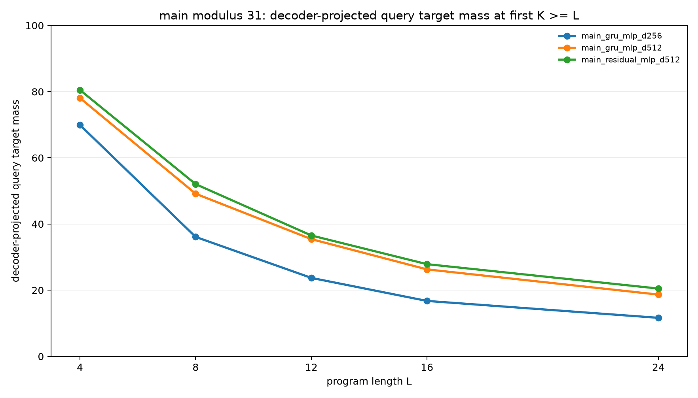
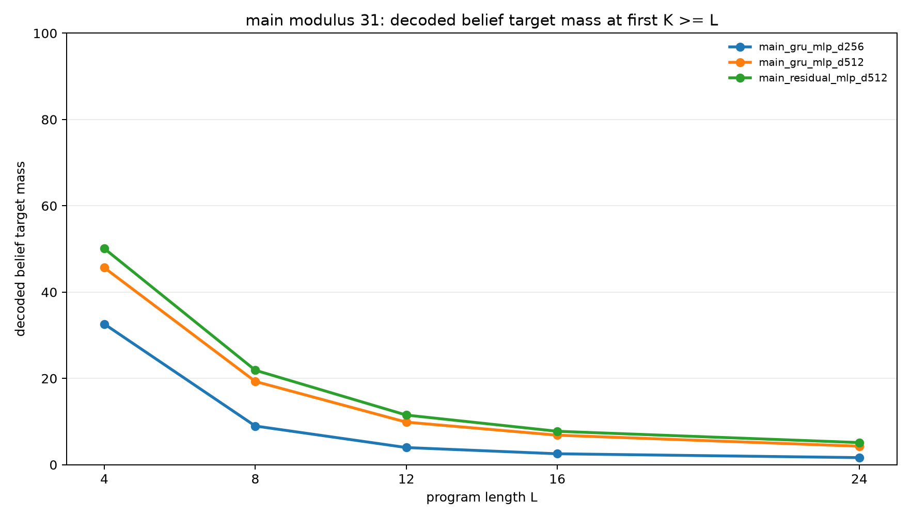

Dense Teacher Distillation for Recurrent Belief Execution
Abstract
This experiment tests whether a fixed-width dense recurrent state can learn exact belief-state execution when supervision is not the limiting factor. Programs operate on two modular registers (A,B) using arithmetic updates and observation filters. A teacher computes the exact belief distribution over all (A,B) pairs after every prefix. A student recurrent executor receives the same program and initial relation, stores only a dense hidden vector, and is trained to decode the exact teacher belief at each recurrent step.
The result is clear but mixed. Full prefix-belief distillation greatly improves dense recurrent execution, and increasing state width from 256 to 512 substantially improves both query accuracy and strict belief accuracy. A residual transition cell is consistently better than a GRU at width 512. However, even the best dense student does not learn exact belief execution on modulus 31. At train-length 8, the best model assigns 52.1% mass to the correct query support but only 21.9% mass to the exact pair-belief support. At held-out length 24, those fall to 20.5% and 5.1%.
Task
Each example starts with a correlated support over two registers:
B = A + delta (mod p)
The program then applies constant arithmetic updates, cross-register arithmetic updates, and observation filters. The teacher maintains the exact belief distribution over all p^2 possible (A,B) pairs after each prefix. The query asks for A, B, A + B, or A - B, all modulo p.
Student Model
The recurrent student embeds the current instruction, updates a fixed-width dense state, and decodes that state to a distribution over all (A,B) pairs. The pilot tested GRU and gated residual transitions, plus MLP and low-rank decoders. The low-rank decoder was dropped from the main sweep because it was consistently worse.
Training And Metrics
The student is trained with full prefix-belief distillation. At each recurrent step, the decoder produces logits over all pairs, and the training loss is cross-entropy against the teacher belief after that prefix.
The direct query head is intentionally left unsupervised in the main runs. The headline query metric is computed by projecting the decoded pair distribution onto the requested query.
decoder_query_target_mass: mass assigned to the correct query support after projection.decoder_belief_target_mass: mass assigned to the exact teacher pair-belief support.probe_belief_target_mass: mass assigned by a separately trained frozen-state probe to the exact pair-belief support.query_target_mass: direct query-head mass, included only as a diagnostic.
Pilot Results
The pilot used modulus 11, train lengths up to 6, and evaluation lengths 3, 6, 9, and 12.
| Variant | L=3 Query | L=6 Query | L=9 Query | L=12 Query | L=3 Belief | L=6 Belief | L=9 Belief | L=12 Belief |
|---|---|---|---|---|---|---|---|---|
| GRU MLP d128 | 90.5% | 61.9% | 44.8% | 35.2% | 70.6% | 37.8% | 21.6% | 15.0% |
| GRU MLP d256 | 94.7% | 71.3% | 53.1% | 41.4% | 81.9% | 52.9% | 32.7% | 22.0% |
| Residual MLP d256 | 94.8% | 71.6% | 54.7% | 42.6% | 81.0% | 52.8% | 33.8% | 22.5% |
| GRU low-rank d256 | 78.8% | 50.3% | 36.4% | 28.5% | 49.4% | 21.2% | 12.0% | 8.9% |
Main Results
The main sweep used modulus 31, train lengths up to 8, and evaluation lengths 4, 8, 12, 16, and 24.
Decoder-Projected Query Mass
| Variant | L=4 | L=8 | L=12 | L=16 | L=24 |
|---|---|---|---|---|---|
| GRU MLP d256 | 69.9% | 36.1% | 23.7% | 16.8% | 11.7% |
| GRU MLP d512 | 78.1% | 49.2% | 35.4% | 26.3% | 18.7% |
| Residual MLP d512 | 80.5% | 52.1% | 36.5% | 27.9% | 20.5% |

Strict Decoded-Belief Mass
| Variant | L=4 | L=8 | L=12 | L=16 | L=24 |
|---|---|---|---|---|---|
| GRU MLP d256 | 32.6% | 9.0% | 4.0% | 2.5% | 1.6% |
| GRU MLP d512 | 45.7% | 19.3% | 9.9% | 6.8% | 4.3% |
| Residual MLP d512 | 50.1% | 21.9% | 11.5% | 7.8% | 5.1% |

Interpretation
Full prefix-belief supervision is not enough to make a fixed-width dense recurrent state behave like an exact symbolic belief executor at modulus 31. The student learns useful approximate state updates, and the approximation improves with more width, but exact pair-belief mass remains low.
The gap between query mass and belief mass is important. The best main model reaches 52.1% projected query mass at train-length 8, but only 21.9% exact pair-belief mass. It learned a partially useful compressed computation, not exact latent belief execution.
The frozen probes do not reveal a hidden exact state. Probe belief mass is close to decoder belief mass on the main fixed-length evaluation rows, suggesting the main bottleneck is the learned recurrent state and transition, not merely the final decoder.
Conclusion
Dense teacher distillation improves recurrent belief execution, and state capacity matters. The strongest tested model is the residual MLP decoder with 512 hidden dimensions. It is better than the GRU at the same width and much better than the 256-dimensional model.
The experiment does not support the claim that full teacher supervision alone makes a dense recurrent student learn exact modular belief-state execution. On the hard modulus-31 setting, the dense state remains an approximation whose accuracy decays quickly with program length.
The most direct next test is to add structure back into the state or transition: factorized register beliefs, explicit pair-state tables, sparse support tracking, or a differentiable update rule constrained to preserve and transform belief mass.
Reproducibility
Code and lightweight artifacts are in experiments/dense_teacher_distillation/. Checkpoints are stored separately in large_artifacts/dense_teacher_distillation/checkpoints/. The normal research bundle is the experiment directory; the checkpoint directory is only needed when loading saved model weights.
src/dense_teacher_distillation_experiment.pysrc/analyze_dense_teacher_distillation.pyanalysis/summary.mdanalysis/threshold_summary.csvcheckpoint_manifest.csv